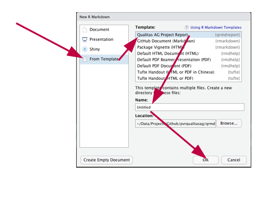

vignettes/qrmdreport_getting_started.Rmd
qrmdreport_getting_started.Rmdlibrary(qrmdtmpl)
The way how to use the package qrmdtmpl to produce project reports based on a given template is described.
The first step is to install the package qrmdtmpl.
remotes::install_github(repo = 'fbzwsqualitasag/qrmdtmpl')
After the installation, a new report based on the template in qrmdtmpl can be created using File -> New File -> RMarkdown -> From Template -> Qualitas AG Project Report.

A new report can also be generated from the R Console using the command
rmarkdown::draft(file = 'report1', package = 'qrmdtmpl', template = 'qprojectreport', create_dir = TRUE)
This creates a new RMarkdown file called report1.Rmd in a new subdirectory called report1. This can then be edited and knit to a pdf-document.
The following wrapper functions are available in this package ‘qrmdtmpl’
# slides qrmdtmpl::draft_qbeamerslides(ps_path = '20210216_test_slides_no_rmd') qrmdtmpl::draft_qbeamerslides(ps_path = '20210216_test_slides_with_rmd.Rmd') # empty doc qrmdtmpl::draft_qemptydoc(ps_path = '20210216_test_empty_no_rmd') qrmdtmpl::draft_qemptydoc(ps_path = '20210216_test_empty_with_rmd.Rmd') # generic doc qrmdtmpl::draft_qgenericdoc(ps_path = '20210216_test_generic_no_rmd') qrmdtmpl::draft_qgenericdoc(ps_path = '20210216_test_generic_with_rmd.Rmd') # report qrmdtmpl::draft_qprojectreport(ps_path = '20210216_test_report_no_rmd') qrmdtmpl::draft_qprojectreport(ps_path = '20210216_test_report_with_rmd.Rmd')